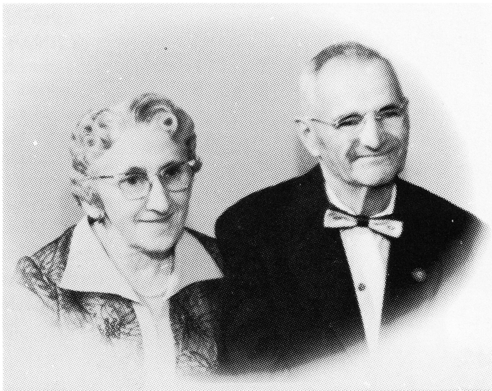

PAUL L'HEUREUX
Paul L'Heureux, the son of Moise L'Heureux and Sophie Pichette, was born in the Jackfish Lake area on November 7th, 1887. He came from a family of fifteen, seven girls and eight boys.
At the age of eighteen, he took a homestead in the area, but in 1914 the war broke out, so he rented his farm and joined the 32nd Infantry Battalion, then called "The Little Black Devils", which are now the Winnipeg Rifles, and was sent overseas on December 18, 1914. He was sent to the battlefront in France and on April 17, 1917, he was reported missing in action at the Battle of Vimy Ridge. Later he was found in an army base hospital. He had been wounded in the right shoulder and spent almost a year in an army hospital in London, England, before being sent home. The wound to his shoulder left him partially disabled for life. He was discharged wtih honours at Regina, Sask. on January 31st, 1918. On July 30th, 1918 Paul wed Beatrice Houde, whom he had been engaged to.
Beatrice was born December 6th, 1893, daughter of Desire Houde and of Alphonsine Fortier of Laurierville, Quebec, a family of seven girls and four boys. In 1910, the demand for school teachers in Saskatchewan took Beatrice and her sister, Marie Aime, out west to the southern part of Saskatchewan where they both taught school. Later on, a new school district was opened in the Jackfish Lake area called the Ness School District. Beatrice was offered the job of head school teacher, which she accepted at a large salary of $60.00 a month.
Paul returned to his homestead after being discharged from the army, but crippled as he was, he could not work the farm as he should have. Those were the horse and wagon days and you needed both hands and arms, so he sold his land and applied through the Department of Veterans Affairs for a job with the Department of Indian Affairs. He was accepted and sent to the Red Pheasant Indian Reservation as a farm instructor. He remained there until 1927, when he moved to St. Paul, then to Lesser Slave Lake Agency at Driftpile, Alberta, as Indian Agent. His new territory included all the Indian bands from a line 100 miles north of Edmonton, up and into parts of the North West Territories, to west into the north eastern portion of British Columbia, and across to the Saskatchewan border; a vast area for that time of the century. The only way most of that far northern part of the territory could be covered, was by horse back, pack horses, wagons, and river boats. It took two months of travelling this was to cover the northern half of the area to pay treaty money to all the Indians once every summer. They had to be forewarned of the date, so the different bands could gather at specified locations to receive their treaty money. They were all paid in $1.00 dollar bills, bacuse the Indians did not understand any other denominations and would not accept any others for many years.
By 1933, and 1934, Paul began to do his travelling by using small single engine planes and flew all across the north country with such famous bush pilots as Wop Mae, Punch Dickens, Stan McConnickey and many others including, Archie McMillan who later became President of Canadian Pacific Airline. Not to mention in all the miles flown over the years, as Indian Agent, Paul and the pilots that flew him around, had many close calls and harrowing experiences.

There were many mercy flights to Indians in the far north in the winter months to drop supplies and medical supplies, because they were starving. Sometimes, they managed to land in small clearings and get out by the skin of their teeth. That was what made these pilots so great.
Paul retired from the Indian Affairs Department in the fall of 1945 after fifteen years with the Lesser Slave Lake Agency. He moved to his mink ranch at Joussard, Alberta, which also is on the shores of Lesser Slave Lake. Here he raised mink and operated a small general store and bus stop. In 1955, he sold his property and bought a home in Edmonton for he and Beatrice to live out their retirement years. Mother was killed in a freak car and tanker collision, June 18th, 1960 at Conner's Ferry in Idaho, U.S.A. She was buried in Edmonton in the Holy Cross Cemetary, St. Albert Trail. Paul passed away 4 years years later on April 5th 1964 at the age of 77 years. He was laid to rest next to his wife, Beatrice.
Paul and Beatrice had a family of six children.
Emilien, the eldest, died shortly after birth.
Yvonnette married to Lucien Comeau. They have six children.
Roger married to Mary Turner. They have no children.
Ephrem married to Yvette Gagnon. They have two children.
Robert married to Jeanne St. Pierre. They have six children.
Frances married to Frank Beach. They have two children.
Paul and Beatrice have 15 Great Grandchildren and 2 Great-Great Grandchildren.
Paul L'Heureux
| NAME | BORN | MARRIED | SPOUSE | BOY | GIRL | DIED |
|---|---|---|---|---|---|---|
| Paul | Nov. 7, 1887 | July 30, 1918 | Beatrice Houde | 4 | 2 | Apr. 1, 1964 |
| Beatrice | June 18, 1960 | |||||
| PAUL'S FAMILY | ||||||
| Moise | May 17, 1919 | May 19, 1919 | ||||
| Yvonnette | Aug. 6, 1920 | Apr. 14, 1942 | Lucien Comeau | 3 | 4 | |
| Roger | Apr. 8, 1922 | Apr. 9, 1950 | Mary Turner | 0 | 0 | |
| Ephrem | Oct. 29, 1924 | July 2, 1952 | Yvette Gagnon | 1 | 1 | |
| Robert | Oct. 18, 1926 | July 19, 1954 | Jean St. Pierre | 4 | 2 | |
| Francoise | Sept. 19, 1931 | June 25, 1955 | Frank Beach | 1 | 1 | |
| Paul's Grandchildren | ||||||
| YVONNETTE'S FAMILY | ||||||
| Paul | Oct. 14, 1943 | Dec. 27, 1961 | Marg Anderson | 1 | 2 | |
| Raymond | Mar. 21, 1944 | Apr. 27, 1963 | Patricia Gibbons | 0 | 2 | |
| Jeannette | June 15, 1947 | May 12, 1967 | Kurt Vance | 1 | 1 | |
| Denise | Apr. 29, 1949 | Aug. 8, 1970 | Stan Blakie | 1 | 1 | |
| Roger | Sept. 14, 1952 | Sept. 5, 1975 | Bev Assmusen | 2 | 0 | |
| Beatrice | Apr. 27, 1954 | Oct. 9, 1982 | Graham Holmes | |||
| Gabrielle | Oct. 27, 1956 | Apr. 5, 1975 | Douglas Lauck | 1 | 1 | |
| Paul's Great Grandchildren | ||||||
| Yvonnette's Grandchildren | ||||||
| PAUL'S FAMILY | ||||||
| Delaine | May 4, 1964 | Apr. 9, | Gene Hird | 1 | ||
| Claudia | Sept. 22, 1966 | 1 | ||||
| Blain | Jan. 5, 1968 | |||||
| RAYMOND'S FAMILY | ||||||
| Laurie | Sept. 1, 1964 | |||||
| Michelle | Aug. 30, 1965 | |||||
| JEANNETTE'S FAMILY | ||||||
| Shaayna | Sept. 18, 1967 | |||||
| Kurc | June 30, 1970 | |||||
| DENISE'S FAMILY | ||||||
| Rhonda | Jan. 12, 1971 | |||||
| Shane | Mar. 1, 1976 | |||||
| ROGER'S FAMILY | ||||||
| Bari | Nov. , 1976 | |||||
| Brent | Nov. 26, 1978 | |||||
| GABRIELLE'S FAMILY | ||||||
| Rhaylene | Sept. 27, 1976 | |||||
| Roger | Aug. 20, 1979 | |||||
| Paul's Great Great Grandchildren | ||||||
| Yvonnette's Great Grandchildren | ||||||
| Paul's Grandchildren | ||||||
| DELAINE'S FAMILY | ||||||
| Michele | July 24, 1981 | |||||
| CLAUDIA'S FAMILY | ||||||
| Linsy Paul | Apr. 29, 1983 | |||||
| Paul's Grandchildren | ||||||
| EPHREM'S FAMILY | ||||||
| Donald | July 31, 1955 | Nov. 16, 1984 | Ruth Bristow | 1 | ||
| Lorraine | Mar. 22, 1959 | June 30, 1979 | Peter Thomson | 1 | ||
| Norine Lynn | Nov. 26, 1984 | |||||
| LORRAINE'S FAMILY | ||||||
| Carrick-Peter | July 3, 1985 | |||||
| Paul's Grandchildren | ||||||
| ROBERT'S FAMILY | ||||||
| Lionel | Dec. 15, 1955 | July 3, 1976 | Betty Kramps | 2 | 0 | |
| Bernard | Nov.23, 1956 | Aug. 25, 1979 | Colleen McConnell | 1 | 1 | |
| Denise | July 18, 1959 | |||||
| Robert | Feb. 27, 1961 | |||||
| Joseph | July 30, 1966 | |||||
| Nichole | Sept. 4, 1971 | |||||
| Paul's Great Grandchildren | ||||||
| Robert's Grandchildren | ||||||
| LIONEL'S FAMILY | ||||||
| Micheal | Apr. 8, 1979 | |||||
| Robin | Sept. 15, 1981 | |||||
| BERNARD'S FAMILY | ||||||
| Lylie Rae | Aug. 6, 1982 | |||||
| Jesse Shea | Apr. 15, 1985 | |||||
| Paul's Grandchildren | ||||||
| FRANCOISE'S FAMILY | ||||||
| Garry | Mar. 25, 1955 | Sept. 21, 1981 | Margaret Kilbride | 2 | 0 | |
| Sherry Lynn | Sept. 19, 1958 | May 29, 1982 | Donald DesCotes | 0 | 1 | |
| Paul's Great Grandchildren | ||||||
| Francoise's Grandchildren | ||||||
| GARRY'S FAMILY | ||||||
| Graham | July 23, 1983 | |||||
| Jeffery | Feb. 19, 1985 | |||||
| SHERRY'S FAMILY | ||||||
| Brittany | Nov. 1, 1985 | |||||
| TOTAL DESCENDANTS | 68 |
| LIVING | 65 |
| DECEASED | 3 |